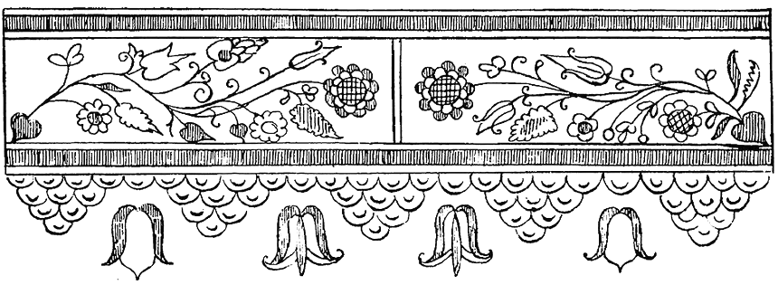

Speculum Coeli
supra Timisoaram · 45°45′ N · 21°13′ E
The heavens over Timișoara, as they stand this minute. Click a sigil to see its aspects.
Ordo Planetarum
Every point in zodiac order, going round from the Ascendant. Click a row to show its aspects on the wheel.
| No. | Point | Position | House | From AC |
|---|